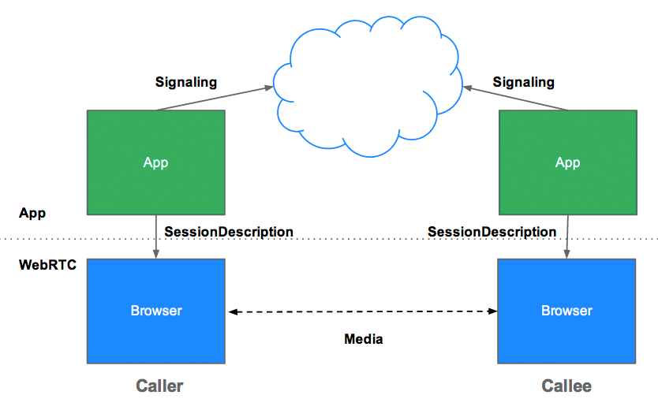
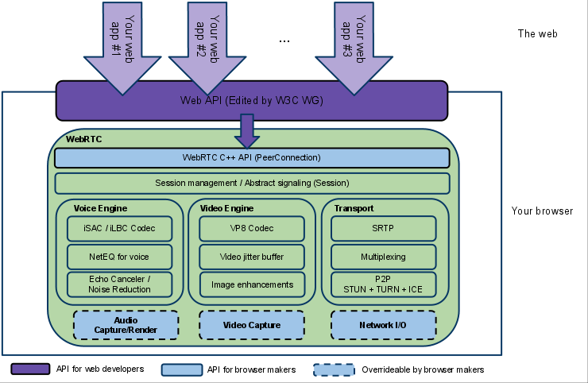
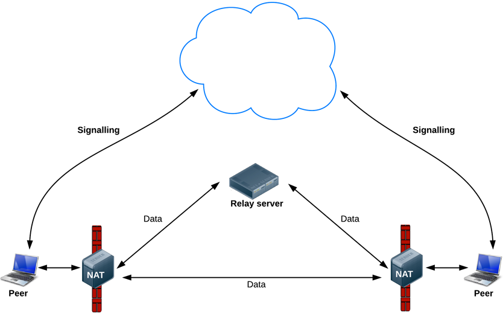

WebRTC
Browser Peer 2 Peer with no plugins
Created by David G. Shannon / @davidgshannon
Presentation instructions
http://bit.ly/lololrtc
WIFI:
HTTPS
whoami
David G. Shannon
- Full Stack
- Geek
- Movie lover
- Cat lover
What is webRTC?
Plugin-free realtime communication
Three APIs that allow p2p browser communication
- MediaStream (aka getUserMedia)
- RTCPeerConnection
- RTCDataChannel
Compatibilidad?
| YES | NO |
How does it work?
MediaStream
navigator.getUserMedia()

MediaStream
// Mr. Browser: Qué quieres captar?
var constraints = {video: true};
// Mr. Browser: Qué hago una vez te lo dé?
function successCallback(stream) {
var video = document.querySelector("video");
video.src = window.URL.createObjectURL(stream);
}
// Mr. Browser: Qué hago si no puedo dartelo?
function errorCallback(error) {
console.log("navigator.getUserMedia error: ", error);
}
// Mr. Browser: Pídeme lo que quieres amorsito
navigator.getUserMedia(constraints, successCallback, errorCallback);
Mr. B: Oh! You are such a beauty!!
Mr. B: No te veo...
MediaStream
// Success callback when requesting audio input stream
function gotStream(stream) {
var audioContext = new AudioContext();
// Create an AudioNode from the stream
var mediaStreamSource = audioContext.createMediaStreamSource(stream);
// Connect it to the destination or any other node for processing!
mediaStreamSource.connect(audioContext.destination);
}
navigator.getUserMedia({audio:true}, gotStream);
Mr. B: MotherOFGod! qué voz tan bonita!
Instant:
Slow:
Clip:
Mr. B: Hello...? It's me...
RTCPeerConnection
RTCPeerConnection Sample
pc = new RTCPeerConnection(null);
pc.onaddstream = gotRemoteStream;
pc.addStream(localStream);
pc.createOffer(gotOffer);
function gotOffer(desc) {
pc.setLocalDescription(desc);
sendOffer(desc);
}
function gotAnswer(desc) {
pc.setRemoteDescription(desc);
}
function gotRemoteStream(e) {
attachMediaStream(remoteVideo, e.stream);
}
Broadcast
...
Who uses WebRTC?
- Citrix
- Tokbox
- Twilio
- Amazon
- Comcast
- Oracle
How does it work?
Browser internals
Getting IP from STUN Servers

Establishing conexion
What next?
- Ehealth
- Real Time Technical Support
- Gaming...